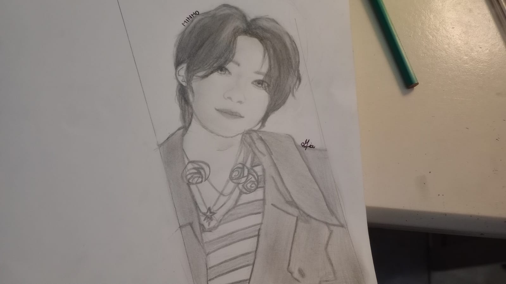

Ilustración tradicional

Ilustración tradicional
Arte & Dibujo: Me apasiona dibujar cosas para los demas, es lindo ver como se emocionan, y yo me esfuerzo mas dibujando si es para alguien. Por ejemplo, el primer dibujo es de un idol, y se lo regale a una amiga por su cumpleaños. El segundo es de un personaje que a mi papa le gusta bastante, asi que se lo regale.
Música: Escucho varios generos musicales, en especial k-pop (pop coreano) y cantantes como Shawn Mendes, Selena Gomez, entre otros.
Pasatiempos: En mi tiempo libre suelo leer o investigar cosas que me llamen la atencion, como psicologia.